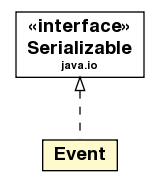

jason.asSemantics
Class Event

java.lang.Object
 jason.asSemantics.Event
jason.asSemantics.Event
- All Implemented Interfaces:
- java.io.Serializable
public class Event
- extends java.lang.Object
- implements java.io.Serializable
- See Also:
- Serialized Form
| Methods inherited from class java.lang.Object |
finalize, getClass, hashCode, notify, notifyAll, wait, wait, wait |
Event
public Event(Trigger t,
Intention i)
getTrigger
public Trigger getTrigger()
getIntention
public Intention getIntention()
sameTE
public boolean sameTE(java.lang.Object t)
isExternal
public boolean isExternal()
isInternal
public boolean isInternal()
equals
public boolean equals(java.lang.Object o)
- Overrides:
equals in class java.lang.Object
clone
public java.lang.Object clone()
- Overrides:
clone in class java.lang.Object
toString
public java.lang.String toString()
- Overrides:
toString in class java.lang.Object
getAsDOM
public org.w3c.dom.Element getAsDOM(org.w3c.dom.Document document)
- get as XML